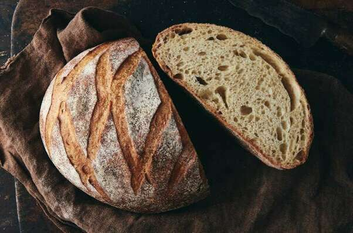

French-Style Country Bread
Originally from: King Arthur

Ingredients
Starter
- 1 cup (227g) cool to lukewarm water (90°F to 100°F)
- 1/2 teaspoon active dry or instant yeast
- 1 1/4 cups (149g) King Arthur Unbleached Bread Flour
- 1/4 cup (28g) King Arthur Premium 100% Whole Wheat Flour
Dough
- all of the starter (above)
- 1 cup (227g) lukewarm water (100°F to 115°F)
- 3/4 teaspoon active dry or 1/2 teaspoon instant yeast
- 1 tablespoon (14g) sugar
- 3 3/4 to 4 cups (450g to 480g) King Arthur Unbleached Bread Flour
- 1 1/2 to 2 1/4 teaspoons salt, to taste
<
Directions
- Stir all of started together and let sit 2 - 16 hours (longer the better).
- After resting starter, stir down and add water, yeast, sugar, salt, and 390g of flour. Stir then let rest 15 minutes and then stir again.
- Knead dough adding up to 90g more flour.
- Cover and let dough rish until doubled in size.
- Deflate dough gently, trying not to knock all air out. Form into 1 large or 2 smaller balls. Place on cornmeal dusted parchment paper on baking sheet.
- Cover and let rise until 50% larger - around 45 - 90 minutes.
- Slash / cross-hatch dough then place in 475° oven. Reduce heat to 425° and spritz on occasion with water.
- Bake for 25 - 30 minutes, interior should reach at least 190°. Let cool.
Notes
-
2021-02-15 - Made as above. Let started sit around 3 hours before making dough. Tried to knead in stand mixer, but never really pulled away clean from the sides of the bowl. Kneaded some by hand after a while in mixer. Did a bad job forming the ball, but still turned out ok. Bread stayed pretty flat, didn't really get much oven spring. Tasted like fresh french bread still, and made for decent toast and sandwiches.